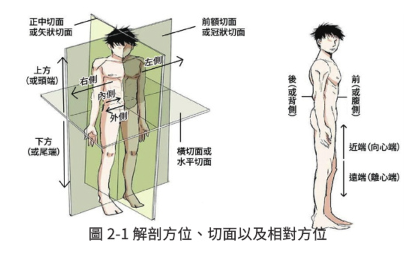
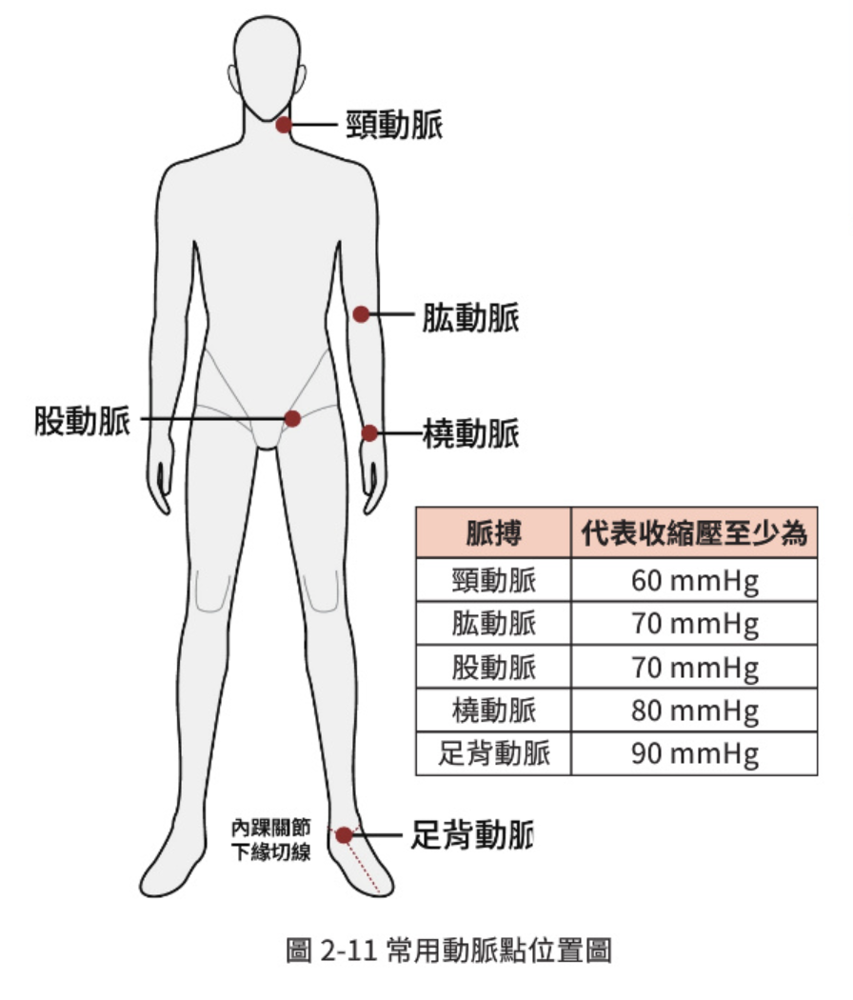
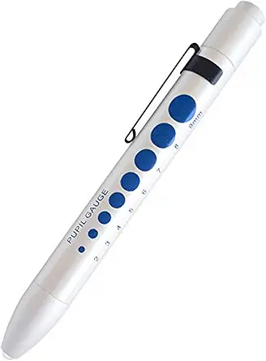

人體解剖位置、切面與體腔
標準解剖學姿勢：解剖學姿勢為病人直立面對救護人員，兩手掌朝向前方。
📐 三大解剖切面
-
1. 正中矢狀面 (Median Sagittal Plane)
通過人體構造或身體中線的垂直平面，依此可平分成左右兩側。
-
2. 冠狀切面 (Frontal / Coronal Plane)
將人體切分為前側（腹側）與後側（背側）兩部分。
-
3. 水平切面 / 橫切面 (Horizontal / Transverse Plane)
平行於地面，可將人體分為上端（頭端）與下端（尾端）兩部分。

📦 體腔 (Body Cavities)
體腔是身體含有內部空間的結構，分為腹側與背側。腹腔是人體最大的體腔，包含消化及泌尿系統的重要器官。
🧬 四大基本組織
人體各大系統生理學
前線救護與各項生理系統息息相關，點擊左側分類可快速查看系統核心機轉。
🧠 神經系統 (P.38)
1. 中樞神經系統 (CNS)
- 大腦：主管意識、思考、感覺、智力、記憶。兩側大腦半球接收與產生身體對側的運動指令。
- 小腦：監督並協調維持身體姿勢的肌肉。
- 延腦 (生命中樞)：控制心跳速率、收縮力、血管舒縮、呼吸節律、吞嚥與嘔吐。
- 脊髓：人體脊髓分成 31 個脊髓節（頸 8、胸 12、腰 5、薦 5、尾 1）。
2. 周邊與自主神經系統
- 交感神經：「戰鬥或逃跑 (Fight or flight)」，心跳加快、減少胃腸蠕動、加強心收縮力、瞳孔放大。
- 副交感神經：「休息與消化 (Rest and digest)」，心跳變慢、促進胃腸蠕動。
意識狀態 (Consciousness / GCS)
意識為中樞神經系統功能呈現之表徵，初級評估首要檢查項目。
🚨 AVPU 意識快速分類
- A (Alert) 清： 清醒且對時間、地點、人物回答適當。
- V (Verbal) 聲： 對聲音刺激才有反應，講話語意不清。
- P (Painful) 痛： 對疼痛刺激才有反應（如按壓指甲床、捏斜方肌）。
- U (Unresponsive) 否： 對任何刺激均無反應，臨床定義為昏迷。
⚠️ 昏迷危急病態姿勢
當 GCS 總分 ≤ 8 分 時即為意識昏迷。以下姿勢提示腦部嚴重損傷：
- 異常屈曲 (M3 / 去皮質姿勢)： 大腦皮質失去功能。表現為雙手朝胸口內收屈曲，足底彎曲。
- 異常伸直 (M2 / 去大腦姿勢)： 腦幹、中腦嚴重受損。表現為雙上肢僵直伸展且向外旋。極度危險。
📋 表 2-3：格拉斯哥昏迷指標 (GCS) 評分表
| 分數 | 👁️ 睜眼反應 (Eye response, E) | 🗣️ 最佳言語反應 (Verbal response, V) | 💪 最佳運動反應 (Motor response, M) |
|---|---|---|---|
| 6 | - | - | 可依指令動作 |
| 5 | - | 說話清楚有條理 | 對刺激可定位位置 (查知痛點) |
| 4 | 自發性睜眼 | 混亂的言語 (答非所問) | 對刺激產生正常閃避收縮 |
| 3 | 對聲音刺激睜眼 | 可說出字詞 (不合理字彙) | 異常屈曲收縮 (M3, 去皮質) |
| 2 | 對壓力刺激睜眼 | 可發出聲音 (呻吟、嘟囔) | 異常伸直 (M2, 去大腦) |
| 1 | 無任何反應 | 無任何反應 | 無 any 反應 |
| 無法 檢測 |
因眼睛腫脹等不能睜眼：C (Closed) | 氣管插管：E (Endo) 氣切：T (Trachea) 失語症：A (Aphasia) |
- |
呼吸評估 (Breathing)
正常成人安靜休息時呼吸速率約為每分鐘 10 - 20 次。評估需包含深、淺、快、慢與異常作功。
🫁 呼吸窘迫生理危急特徵
• 喘鳴音 (Stridor): 吸氣高音調，上呼吸道阻塞。
• 咕嚕聲 (Grunting): 吐氣低音調。
• 三腳架姿勢 (Tripod Position): 雙手撐膝，提示下呼吸道阻塞（如 COPD 病人）。
📋 異常呼吸型態對照表
| 呼吸型態 | 定義 / 生理特徵 | 常見到院前臨床病因 |
|---|---|---|
| 過度換氣 (Hyperventilation) | 規則性、速度加快之深呼吸。 | 代謝性酸中毒（如 DKA）、嚴重缺氧（肺栓塞、高海拔）、焦慮恐慌。 |
| 呼吸過速 (Tachypnea) | 每分鐘呼吸次數大於 20 次。 | 發燒、中暑代償、輕中度疼痛、嚴重缺氧早期。 |
| 呼吸徐緩 (Bradypnea) | 每分鐘呼吸次數小於 10 次。 | 中樞神經藥物中毒（如嗎啡、鎮靜劑）、嚴重末期腦傷。 |
| 閉氣式呼吸 (Apneustic) | 在吸氣末期後發生長時間之閉氣。 | 腦幹（橋腦）處之嚴重損傷或病變。 |
| 瀕死或喘息式呼吸 (Agonal or Gasping) |
極慢、不規則且長之深呼吸。 | 絕對無效呼吸！常見於突然心跳停止 (OHCA) 病人之初期微弱生理反射，必須立即施予 CPR。 |
脈搏評估 (Pulse)
正常成人清醒且休息時每分鐘脈搏約為 60 - 100 次。需評估速率、節律與強度。
💓 脈搏生理連動要點
- 觸摸量測：初級評估時以食指、中指觸摸橈動脈或評估頸動脈，量測 10 秒鐘心跳數再乘以 6。
-
體溫連動關係（高頻考點）：
發燒通常會引致脈搏增加，當體溫每上升 1°C，脈搏每分鐘約增加 8 ~ 10 次。 - 變慢因素：低體溫、服用強心劑（如毛地黃類藥物）、或是長期受過訓練的運動員在休息狀態。
🩸 臨床觸摸脈搏預估最低收縮壓 (P.41)
當無法立即量測血壓計時，可藉由能觸摸到的動脈部位，粗估傷病患的最低收縮壓臨界值。
| 可觸摸到的動脈部位 | 代表收縮壓至少為 |
|---|---|
| 頸動脈點 (Carotid pulse) | 60 mmHg |
| 肱動脈點 (Brachial pulse) | 70 mmHg |
| 橈動脈點 (Radial pulse) | 80 mmHg |
| 股動脈點 (Femoral pulse) | 70 mmHg |
| 足背動脈點 (Dorsalis pedis pulse) | 90 mmHg |

血壓量測 (Blood Pressure)
血壓單位為毫米汞柱 (mmHg)。收縮壓為心室收縮時排血產生的最高壓力；舒張壓為心室舒張時血管內的最低壓力。
📋 表 2-4：衛生福利部國民健康署 血壓參考標準
| 分類 | 收縮壓 (Systolic, mmHg) | 舒張壓 (Diastolic, mmHg) |
|---|---|---|
| 正常血壓 | < 120 | 且 < 80 |
| 高血壓前期 | 120 - 139 | 或 80 - 89 |
| 高血壓第一期 | 140 - 159 | 或 90 - 99 |
| 高血壓第二期 | ≥ 160 | 或 ≥ 100 |
💡 量測操作注意事項與限制：
• 操作規範： 壓脈帶應綁於傷病患肘關節上 2 指高度（約 3 公分），鬆緊度應留 1 - 2 根手指能伸入進出的空隙，避免數據不準。
• 姿勢影響： 姿勢變化會造成血壓變動（血壓值：站姿 > 坐姿 > 平躺）。若由躺姿驟然站立時，收縮壓急速下降達 20 mmHg 以上且出現頭暈、出冷汗，臨床稱為姿勢性低血壓。
瞳孔變化 (Pupil)
正常人兩眼瞳孔應等大（約 2-4mm）、圓形且對光有迅速收縮的反應。為到院前探查中中樞神經病變的重要指標。
📋 瞳孔臨床異常表徵對照表
| 瞳孔異常型態 | 數據定義 | 可能之臨床損傷與中毒病因 |
|---|---|---|
| 瞳孔不等大 (Anisocoria) |
兩眼瞳孔相差 1 mm 以上。 | 嚴重腦損傷、顱內出血（致使腦壓上升、顱內壓上升 IICP）、腦袋內病變（腦瘤、動眼神經受損）。 |
| 針尖狀瞳孔 (Pinhole) |
小於 2 mm。 | 臨床三大魔王病因：1. 橋腦出血。2. 有機磷農藥（殺蟲劑）中毒。3. 鴉片類（毒品/嗎啡）藥物中毒。 |
| 瞳孔散大 | 大於 4 mm 且對光無反應。 | 重度中樞神經缺氧、末期嚴重腦出血、抗乙醯膽鹼藥物中毒（如阿托品類藥物散瞳效應）。 |
評估方式：用筆燈從眼睛外側水平 45 度角照射眼睛，觀察兩眼雙側光反射是否對等、有無遲鈍。

體溫量測 (Body Temperature)
分為反映生命重要器官（腦、心、腎）的「核心體溫」與「體表溫度」。耳溫與肛溫較能準確代表核心溫度。
🌡️ 體溫基礎常識
- 核心體溫： 由腦部「下視丘」負責體溫調節中樞，正常成人恆定值約為 36.5°C ~ 37.5°C。
- 體表溫度： 指表層皮膚、皮下組織及肌肉等溫度，易受環境對流、傳導、輻射影響（如額溫、腋溫，正常成人約 36.0°C）。
❄️ 低體溫症 (Hypothermia) 臨床分期表
當暴露於寒冷、溺水或嚴重外傷導致核心體溫 低於 35°C 時，定義為低體溫，代償機制會改變：
| 低體溫分期 | 核心體溫範圍 | 傷病患前線生理機轉與特徵 |
|---|---|---|
| 輕度低體溫 | 32°C - 35°C | 身體骨骼肌會自發性劇烈發抖以產生熱能代償。 |
| 中度低體溫 | 28°C - 32°C | 核心溫度過低導致代償衰竭，身體發抖減少或停止，意識開始模糊、變得呆滯。 |
| 重度低體溫 | < 28°C | 身體機制完全崩潰，發抖完全停止，意識呈現深度昏迷、心律不整。 |
膚色表徵 (Skin Color)
膚色為身體循環及氧合狀況呈現於外在皮膚之表現。評估通常需結合溫度、潮溼度（如濕冷、溫乾）共同判讀。
📋 四大異常膚色臨床意義對照表
| 膚色表現 | 微血管生理狀況 | 到院前常見臨床意義與休克病因 |
|---|---|---|
| 蒼白 (Pale) | 表皮微血管灌流不足。 | 一般代表末梢血液灌流嚴重缺乏，如失血性休克、重大創傷、嚴寒環境。皮膚潮溼且冷常提示休克代償期。 |
| 發紺 (Cyanotic) | 血液中去氧血紅素過高。 | 代表血液中氧氣含量太低，常見於呼吸道完全阻塞、嚴重氣喘、溺水、肺泡氣體交換不良等危急缺氧疾病。 |
| 潮紅 (Flushed) | 周邊血管過度擴張。 | 可見於劇烈運動、高熱環境熱急症（如中暑），或因脊髓受損導致交感神經中斷引起的神經性休克（溫乾的皮膚）。 |
| 黃疸 (Jaundiced) | 膽紅素過高堆積。 | 提示病人可能有肝臟、膽囊方面的疾病或系統性溶血。 |
血氧濃度 (Pulse Oximetry / SpO2)
血氧飽和度代表血紅素攜帶氧氣的程度。到院前一般以血氧濃度 低於 94% 作為缺氧與給氧的評估依據。
⚠️ 致命陷阱：血紅素載體異常（最常考考點）
常規到院前血氧分析儀完全無法偵測血液中的變性血紅素及一氧化碳血紅素！
因此，在火災現場或一氧化碳 (CO) 中毒的環境中，儀器會誤將一氧化碳結合的血紅素當作氧氣，在螢幕上呈現偽陽性的正常高血氧值（例如 99% 或 100%）。前線 EMT 絕不可盲目依賴儀器，應根據火災環境直接給予高濃度氧氣治療！
📋 影響血氧計準確度之六大限制因素表
| 干擾因素項目 | 干擾生理機轉與細節 |
|---|---|
| 1. 一氧化碳中毒 | 無法辨識變性血紅素，造成偽陽性的高數值讀數。 |
| 2. 末梢指尖冰冷 | 身體長環境曝露在低溫天氣或休克，造成血管極度收縮，血流不足使數值偏低或不顯示。 |
| 3. 指端物品干擾 | 指甲塗抹指甲油、指甲有嚴重污垢、指甲床過厚或有灰指甲，均會阻礙紅外線穿透。 |
| 4. 同側肢體血壓干擾 | 血氧分析儀與血壓計壓脈帶綁在「同一側肢體」，當血壓計充氣阻斷肢體血流時，會造成血氧無法讀取。 |
| 5. 探頭指套位移 | 指甲床未精準對正紅光，或是探頭大小不符合，手指探入過深、過淺。 |
| 6. 高海拔低氣壓 | 高海拔（低氧分壓）環境，大氣氧分壓低，正常人的 SpO2 數值亦會生理性降低。 |